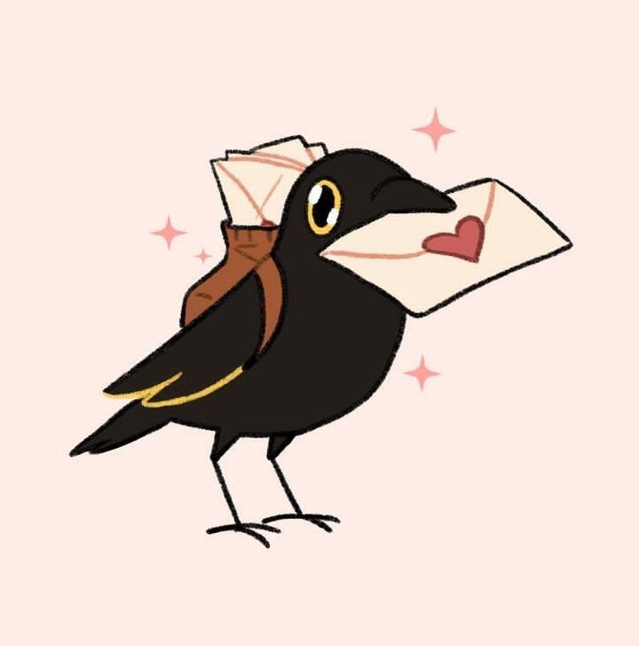

<!DOCTYPE html>
<html lang="it">
<head>
  <meta charset="UTF-8">
  <meta name="viewport" content="width=device-width, initial-scale=1.0">
  <title>Sai quanto ti amo?</title>
  <link href="https://fonts.googleapis.com/css2?family=Pacifico&family=Inter:wght@400;700&display=swap" rel="stylesheet">
  <link rel="stylesheet" href="https://cdnjs.cloudflare.com/ajax/libs/font-awesome/6.0.0-beta3/css/all.min.css">
  <style>
    /* Variabili CSS */
    :root {
      /* Colori Fase 1 (Introduzione) */
      --intro-bg-color: #fef1f5; /* Rosa chiaro */
      --intro-text-color: #333; /* Testo scuro */
      --intro-clickable-hover: #ffc8d3; /* Hover per l'immagine cliccabile */

      /* Colori Fase 2 (Quiz - Sfondo viola scuro) */
      --quiz-bg-color: #372D56; /* Viola scuro dominante dall'immagine del corvo che dorme */
      --quiz-text-color: #F5F5F5; /* Testo molto chiaro per leggibilità su sfondo scuro */
      --quiz-font: 'Inter', sans-serif;
      --quiz-primary-color: #6a05ad; /* Viola scuro/intenso per bottoni/selezione */
      --quiz-button-hover-color: #8b008b;
      --quiz-border-color: #C8C1DA; /* Bordo più chiaro per contrasto */
      --quiz-container-bg: rgba(55, 45, 86, 0.9); /* Container viola scuro leggermente trasparente */
      --quiz-shadow-color: rgba(0, 0, 0, 0.4);
      --quiz-selected-option-color: #A799FF; /* Viola pastello dolce per opzione selezionata */
      --quiz-question-color: #E0E0E0; /* Domande in un colore molto chiaro su sfondo scuro */

      /* Colori Fase 3 (Risultato) */
      --result-bg-color: #372D56; /* Viola scuro */
      --result-text-color: #333; /* Testo scuro per il container bianco */
      --result-primary-color: #6a05ad;
      --result-container-bg: #f5f3ff; /* Container risultato viola chiaro */
      --result-shadow-color: rgba(0, 0, 0, 0.15); /* Ombra normale per il container */

      /* Colori Fase 5 (Immagini finali) */
      /* Sfondo rimane viola scuro come result-bg-color */
      --final-images-text-color: #F5F5F5; /* Testo chiaro su sfondo scuro */
      --final-images-title-color: #A799FF; /* Colore per il nuovo titolo */

      /* Colori Fase 6 (Lettera) */
      --letter-bg-color: #FFB6C1; /* Rosa pastello per il body (come bordo esterno) */
      --letter-text-color: #333; /* Testo scuro per contrasto */
      --letter-container-bg: #FFD1DC; /* Rosa più chiaro per lo sfondo interno della lettera (parte "blu") */
      --letter-border-color: #FFB6C1; /* Bordo della sezione della lettera, colore leggermente più chiaro */

      --transition-speed: 0.8s;
    }

    body {
      margin: 0;
      padding: 0;
      font-family: 'Segoe UI', sans-serif;
      background-color: var(--intro-bg-color);
      color: var(--intro-text-color);
      display: flex;
      flex-direction: column;
      align-items: center;
      justify-content: center;
      min-height: 100vh;
      transition: background-color var(--transition-speed) ease, color var(--transition-speed) ease;
      text-align: center;
      position: relative;
      overflow-x: hidden;
    }

    #app {
      max-width: 90%;
      width: 100%;
      padding: 20px;
      box-sizing: border-box;
      position: relative; /* Importante per posizionare il pulsante con absolute */
      min-height: 500px;
      display: flex;
      flex-direction: column;
      justify-content: center;
      align-items: center;
      transition: background-color var(--transition-speed) ease, box-shadow var(--transition-speed) ease, padding var(--transition-speed) ease;
    }

    /* Stili per la Fase 2 (Quiz) */
    body.phase-2 {
        background-color: var(--quiz-bg-color);
        color: var(--quiz-text-color);
        font-family: var(--quiz-font);
    }
    #app.phase-2 {
        background-color: var(--quiz-container-bg);
        box-shadow: 0 8px 20px var(--quiz-shadow-color);
        max-width: 95%;
        padding: 30px 20px;
        color: var(--quiz-text-color);
    }

    /* Stili per la Fase 3 (Risultato) */
    body.phase-3 {
        background-color: var(--result-bg-color); /* Sfondo viola scuro */
        color: var(--result-text-color);
        font-family: var(--quiz-font);
    }
    #app.phase-3 {
        background-color: var(--result-container-bg); /* Contenitore viola chiaro */
        box-shadow: 0 8px 20px var(--result-shadow-color); /* Ombra normale per il container */
        max-width: 95%;
        padding: 30px 20px;
        color: var(--result-text-color);
        min-height: 600px; /* Aumentato per accogliere il pulsante */
        height: auto;
        padding-bottom: 80px; /* Spazio per il pulsante posizionato assolutamente */
        display: flex; /* Assicura che i contenuti siano disposti in colonna */
        flex-direction: column;
        align-items: center;
        position: relative; /* Assicurati che sia position: relative per il pulsante absolute */
    }

    /* Stili per la Fase 5 (Immagini finali) - Sfondo rimane viola scuro */
    body.phase-5 {
        background-color: var(--result-bg-color); /* Sfondo viola scuro */
        color: var(--final-images-text-color); /* Testo chiaro */
        font-family: var(--quiz-font);
    }
    #app.phase-5 {
        background-color: transparent; /* Il div app sarà trasparente per mostrare lo sfondo del body */
        box-shadow: none; /* Nessuna ombra per il div app */
        max-width: 95%;
        padding: 20px; /* Padding ridotto per le immagini */
        color: var(--final-images-text-color);
        min-height: auto;
        height: auto;
        display: flex;
        flex-direction: column;
        align-items: center;
        justify-content: center;
        flex-grow: 1;
        position: relative; /* Potrebbe servire per eventuali elementi posizionati */
    }

    /* Stili per la Fase 6 (Lettera) */
    body.phase-6 {
        background-color: var(--letter-bg-color); /* Rosa pastello per il body (come bordo esterno) */
        color: var(--letter-text-color); /* Testo scuro */
        font-family: var(--quiz-font);
    }
    #app.phase-6 {
        background-color: var(--letter-container-bg); /* Rosa più chiaro per lo sfondo interno della lettera */
        box-shadow: 0 4px 8px rgba(0, 0, 0, 0.2);
        max-width: 80%;
        padding: 30px;
        border-radius: 15px;
        text-align: center; /* Centrato per il contenuto, ma il testo interno sarà left */
        min-height: auto;
        height: auto;
        display: flex;
        flex-direction: column;
        align-items: center;
        justify-content: center;
        border: 2px solid var(--letter-border-color); /* Bordo della sezione della lettera */
        position: relative; /* Per posizionare il pulsante di copia */
    }

    .hidden {
      display: none !important;
    }

    /* Stili introduttivi romantici con font originale */
    #intro h1 {
        font-family: 'Segoe UI', sans-serif;
        color: #e91e63;
        font-size: 2.8em;
        margin-bottom: 10px;
        text-shadow: 1px 1px 2px rgba(0,0,0,0.1);
    }
    #intro p {
        font-family: 'Segoe UI', sans-serif;
        font-size: 1.2em;
        color: #555;
        margin-bottom: 30px;
        line-height: 1.5;
    }

    /* IMPEGNO: Immagine intro con bordo circolare e ombra */
    #intro-image {
        width: 180px;
        height: 180px;
        border-radius: 50%; /* Reso circolare */
        object-fit: cover;
        cursor: pointer;
        transition: transform 0.3s ease-out, box-shadow 0.3s ease-out;
        box-shadow: 0 6px 12px rgba(0, 0, 0, 0.25);
        margin-top: 20px;
        border: 4px solid var(--intro-clickable-hover);
    }
    #intro-image:hover {
        transform: scale(1.08);
        box-shadow: 0 8px 16px rgba(0, 0, 0, 0.4);
    }

    /* Stili per la pagina "Ora che hai cliccato..." */
    #pre-quiz-section h2 {
        color: white; /* Titolo in bianco */
        margin-bottom: 25px;
        font-weight: 700;
    }
    /* Stili per il quiz vero e proprio */
    #quiz-section h2 {
        color: var(--quiz-primary-color);
        margin-bottom: 25px;
        font-weight: 700;
    }
    /* Stili per la pagina dei risultati */
    #result-section h2 {
        color: var(--result-primary-color);
        margin-bottom: 25px;
        font-weight: 700;
    }

    /* IMPEGNO: Pulsante/Immagine "Inizia il Quiz" circolare con bordo neon */
    #start-quiz-image {
        width: 200px; /* Dimensione dell'immagine */
        height: 200px;
        object-fit: cover;
        border-radius: 50%; /* Reso circolare */
        cursor: pointer;
        transition: transform 0.3s ease-out, box-shadow 0.3s ease-out;
        /* Bordo neon per l'immagine */
        box-shadow: 0 0 10px 2px #ff00ff, 0 0 20px 6px #8a2be2;
        margin-top: 30px;
        border: 4px solid var(--quiz-primary-color); /* Bordo colorato per la base */
    }
    #start-quiz-image:hover {
        transform: scale(1.05);
        /* Intensifica il neon all'hover */
        box-shadow: 0 0 15px 3px #ff00ff, 0 0 25px 8px #8a2be2;
    }


    .question-section {
        margin-bottom: 30px;
        text-align: left;
        width: 100%;
    }

    .question-section p {
      font-size: 1.15em;
      margin-bottom: 15px;
      color: var(--quiz-question-color);
      font-weight: bold;
    }

    .options label {
        display: block;
        background-color: var(--quiz-container-bg);
        padding: 15px;
        margin-bottom: 10px;
        border-radius: 8px;
        cursor: pointer;
        transition: background-color 0.3s ease, border-color 0.3s ease;
        border: 1px solid var(--quiz-border-color);
        font-size: 1em;
        color: var(--quiz-text-color);
        /* Bordo neon per le opzioni del quiz */
        box-shadow: 0 0 5px 1px #ff00ff, 0 0 10px 3px #8a2be2;
    }

    .options label:hover {
        background-color: rgba(255, 255, 255, 0.2);
        border-color: var(--quiz-primary-color);
    }

    .options input[type="radio"] {
        display: none;
    }

    /* Stile per l'opzione selezionata (viola pastello) */
    .options input[type="radio"]:checked + label {
        background-color: var(--quiz-selected-option-color); /* Viola pastello dolce */
        border-color: var(--quiz-primary-color); /* Mantiene il bordo viola scuro */
        color: white; /* Testo bianco per contrasto */
        /* Bordo neon un po' più intenso per l'opzione selezionata */
        box-shadow: 0 0 10px 2px #ff00ff, 0 0 20px 6px #8a2be2;
    }

    /* Pulsante di avanzamento alla schermata delle immagini finali */
    #next-images-button {
        background-color: var(--quiz-primary-color);
        color: white;
        border: none;
        width: 50px; /* Piccolo pulsante */
        height: 50px;
        border-radius: 50%; /* Rende il pulsante circolare */
        font-size: 1.5em; /* Dimensione icona freccia */
        cursor: pointer;
        transition: background-color 0.3s ease, transform 0.2s ease;
        /* Nuovo posizionamento in basso a destra, relativo al div#app */
        position: absolute; /* Ora è absolute, non fixed */
        bottom: 20px;
        right: 20px;
        z-index: 1000; /* Assicura che sia sopra gli altri elementi all'interno di #app */
        box-shadow: 0 0 10px 2px #ff00ff, 0 0 15px 5px #8a2be2; /* Bordo neon */
        display: flex;
        align-items: center;
        justify-content: center;
    }
    #next-images-button:hover {
        background-color: var(--quiz-button-hover-color);
        transform: scale(1.05);
    }

    #summary {
        list-style: none;
        padding: 0;
        margin-bottom: 20px;
        text-align: left;
        width: 100%; /* Occupa la larghezza disponibile */
    }
    #summary li {
        margin-bottom: 10px;
        line-height: 1.4;
    }
    #summary strong {
        display: block;
        margin-bottom: 5px;
    }

    #final-phrase {
        font-size: 1.4em;
        font-style: italic;
        margin-top: 50px; /* Spazio sufficiente sopra la frase */
        margin-bottom: 30px; /* Spazio sotto la frase per eventuali elementi */
        color: var(--result-primary-color);
        word-wrap: break-word;
        text-align: center; /* Centra la frase finale */
        width: 100%; /* Occupa la larghezza disponibile */
    }

    /* Stili per la nuova schermata delle immagini finali (Fase 5) */
    #final-images-section {
        display: flex;
        flex-direction: column;
        align-items: center;
        justify-content: center;
        width: 100%;
        padding: 20px 0;
        min-height: 100vh; /* Fa in modo che la sezione occupi tutta l'altezza dello schermo */
        box-sizing: border-box; /* Include padding nell'altezza */
    }

    /* Nuovo titolo al posto dell'immagine del cuore */
    #final-images-title {
        font-size: 2em;
        color: var(--final-images-title-color); /* Colore del titolo */
        margin-bottom: 30px; /* Spazio sotto il titolo */
        text-shadow: 1px 1px 3px rgba(0,0,0,0.3);
        text-align: center;
    }

    /* Contenitore per le due immagini finali */
    .final-image-container {
        display: flex;
        flex-direction: row; /* Disposizione orizzontale */
        align-items: center;
        gap: 20px; /* Spazio tra le due immagini */
        margin-top: 20px; /* Spazio tra il titolo e le immagini */
        flex-wrap: wrap; /* Permette il wrapping su schermi piccoli */
        justify-content: center;
    }

    .final-image-item {
        width: 160px; /* Dimensione delle immagini finali */
        height: 160px;
        border-radius: 50%;
        object-fit: cover;
        cursor: pointer;
        transition: transform 0.3s ease-out;
        box-shadow: 0 0 15px 5px #ff00ff, 0 0 25px 10px #8a2be2; /* Bordo neon per le immagini */
    }

    .final-image-item:hover {
        transform: scale(1.1);
    }

    /* Stili per la pagina della lettera */
    #letter-section {
        white-space: pre-line; /* Mantiene le interruzioni di riga nel testo */
        font-size: 1.1em;
        line-height: 1.6;
        color: var(--letter-text-color); /* Colore testo scuro per contrasto */
        text-align: left; /* Allinea il testo a sinistra */
        width: 90%;
        max-width: 700px; /* Larghezza massima per la leggibilità */
        margin: 20px auto; /* Centra la lettera */
        background-color: var(--letter-container-bg); /* Sfondo rosa chiaro per la parte interna (BLU) */
        padding: 20px; /* Padding interno alla sezione della lettera */
        border-radius: 10px; /* Bordo arrotondato per la sezione interna */
        position: relative; /* Per posizionare il pulsante di copia */
    }
    #letter-section h2 {
        color: #e91e63; /* Colore rosa più intenso per il titolo */
        margin-bottom: 20px;
        font-size: 2em;
        text-align: center;
    }
    #letter-section p {
        margin-bottom: 1em;
    }
    #letter-section em {
        display: block; /* Va a capo */
        margin-top: 2em;
        text-align: right;
        font-style: normal; /* Rimuove l'italico se non desiderato */
        font-weight: bold;
        color: #e91e63; /* Colore rosa più intenso per la firma */
    }

    /* Pulsante per chiudere la lettera */
    #close-letter-button {
        background-color: var(--quiz-primary-color);
        color: white;
        border: none;
        padding: 10px 20px;
        border-radius: 25px;
        font-size: 1em;
        cursor: pointer;
        transition: background-color 0.3s ease, transform 0.2s ease;
        margin-top: 20px;
    }
    #close-letter-button:hover {
        background-color: var(--quiz-button-hover-color);
        transform: translateY(-2px);
    }

    /* Pulsante Copia */
    #copy-letter-button {
        background-color: var(--quiz-primary-color);
        color: white;
        border: none;
        width: 40px; /* Dimensioni fisse per un'icona */
        height: 40px;
        border-radius: 50%; /* Circolare */
        font-size: 1.2em; /* Dimensione icona */
        cursor: pointer;
        transition: background-color 0.3s ease, transform 0.2s ease;
        margin-top: 20px;
        display: flex;
        align-items: center;
        justify-content: center;
        /* Posizionamento assoluto in alto a destra all'interno della lettera */
        position: absolute;
        top: 15px;
        right: 15px;
        box-shadow: 0 2px 5px rgba(0,0,0,0.2);
    }
    #copy-letter-button:hover {
        background-color: var(--quiz-button-hover-color);
        transform: scale(1.1);
    }

    /* Media queries per una migliore responsività */
    @media (max-width: 600px) {
        #app {
            padding: 20px;
            margin: 10px;
        }

        #intro h1 {
            font-size: 2.2em;
        }
        #intro p {
            font-size: 1em;
        }
        #intro-image {
            width: 150px;
            height: 150px;
        }

        #pre-quiz-section h2, #quiz-section h2, #result-section h2 {
            font-size: 1.6em;
        }

        .question-section p {
            font-size: 1em;
        }

        .options label {
            padding: 12px;
            font-size: 0.95em;
        }

        #final-phrase {
            font-size: 1.2em;
        }

        #final-images-title {
            font-size: 1.6em;
            margin-bottom: 20px;
        }

        .final-image-item {
            width: 130px;
            height: 130px;
        }

        #next-images-button {
            width: 45px;
            height: 45px;
            font-size: 1.3em;
            bottom: 15px; /* Adattato per schermi più piccoli */
            right: 15px; /* Adattato per schermi più piccoli */
        }

        .final-image-container {
            flex-direction: column; /* Torna in colonna su schermi molto piccoli se preferisci */
            gap: 20px;
        }

        #copy-letter-button {
            width: 35px;
            height: 35px;
            font-size: 1.1em;
            top: 10px;
            right: 10px;
        }
    }
  </style>
</head>
<body class="phase-1">
  <div id="app">
    </div>

  <script>
    const app = document.getElementById('app');
    const body = document.body;
    let userAnswers = []; // Array per memorizzare le risposte dell'utente (testo)
    let userEffectPhrases = []; // Array per memorizzare le frasi d'effetto scelte
    let currentQuestionIndex = 0;

    // Contenuto della lettera, ora una variabile globale per facilitare il richiamo
    const loveLetterContent = `
      <h2>Il corvo ti ha mandato la lettera</h2>

      <p>Tu non sei sola.
      Nemmeno quando il mondo sembra troppo,
      nemmeno quando pensi che nessuno ti stia guardando davvero.</p>

      <p>Io ti vedo.
      Ti vedo anche quando non dici niente.
      Quando trattieni tutto, quando abbassi gli occhi, quando dici “tanto passa” ma dentro ti spegni un po’.</p>

      <p>Io ti leggo.
      E non serve che tu spieghi tutto per filo e per segno: certe cose le sento.
      Le leggo nel modo in cui respiri piano, nel modo in cui ti chiudi ma vorresti essere abbracciata lo stesso.</p>

      <p>Tu sei vista. E capita, anche nei pezzi che credi di dover nascondere.
      Io ti tengo dentro, anche quando non so bene come dirtelo.</p>

      <p>È vero, magari non sempre riesco a supportarti nel modo perfetto.
      A volte mi perdo nel cercare le parole giuste, o ho paura di sbagliare. </p>

      <p>Però tu, tu sei tutto quello che non passa inosservato.
      Anche quando sei fragile. Anche quando dici che stai bene ma hai lo sguardo stanco.
      E io ci sono. Davvero. Con tutto quello che sono, anche con i miei sbagli.</p>

      <p>Il corvo ti ha portato questa lettera.
      Ma ogni parola l’ho scritta io, a modo mio.
      Per dirti solo questo:
      <strong>tu non sei sola. Non lo sei mai stata.</strong></p>

      <p><em>Il tuo rimbambito 💜</em></p>
    `;

    const quizData = [
      {
        question: "Qual è la verità che ti fa più male ammettere?",
        options: [
          { text: "Che non sono abbastanza.", effectPhrase: "A forza di sforzarti per valere qualcosa, hai smesso di guardarti con tenerezza." },
          { text: "Che se sparissi, non cambierebbe niente.", effectPhrase: "Ti annulli a piccoli passi, sperando che qualcuno dica “resta”." },
          { text: "Che faccio ridere anche quando mi spezzo.", effectPhrase: "Nessuno ti ha mai chiesto se stavi bene mentre li facevi sorridere." },
          { text: "Che ho bisogno, ma non lo dico.", effectPhrase: "Hai imparato a nascondere la fame d’amore sotto sorrisi controllati." }
        ]
      },
      {
        question: "Quando stai male, cosa fai finta di essere?",
        options: [
          { text: "Impegnato.", effectPhrase: "Sei bravo a sembrare calmo, ma dentro a volte tremi senza un suono." },
          { text: "Tranquillo.", effectPhrase: "Ogni tuo “va tutto bene” nasconde una tempesta che solo tu sai reggere." },
          { text: "Distratto.", effectPhrase: "Ti perdi nei pensieri pur di non far vedere quanto hai bisogno di essere visto." },
          { text: "Fortissimo.", effectPhrase: "Hai fatto della forza una maschera, ma anche i giganti si stancano." }
        ]
      },
      {
        question: "Cosa ti è mancato più di tutto?",
        options: [
          { text: "Qualcuno che mi ascoltasse davvero.", effectPhrase: "Hai imparato a non chiedere più, ma il bisogno è rimasto in silenzio dentro di te." },
          { text: "Un abbraccio sincero.", effectPhrase: "Ti manca ciò che non hai mai ricevuto davvero: un abbraccio che dicesse “ci sono”." },
          { text: "Una voce che mi dicesse “resta”.", effectPhrase: "Hai aspettato quella voce, e forse la stai ancora aspettando." },
          { text: "Una volta in cui non mi sono sentito di troppo.", effectPhrase: "Ogni volta che ti sei sentito di troppo, hai costruito muri che ora ti stringono." }
        ]
      },
      {
        question: "A chi avresti voluto dire qualcosa, ma non l’hai fatto?",
        options: [
          { text: "A chi mi ha dimenticato.", effectPhrase: "Ci sono parole che hai sepolto per non disturbare. Ma gridano ancora, dentro." },
          { text: "A me stesso, quando avevo paura.", effectPhrase: "Hai lasciato andare per proteggerti, ma certe paure andavano abbracciate." },
          { text: "A chi mi ha usato.", effectPhrase: "Chi ti ha usato non ha tolto valore a ciò che sei. Solo luce a ciò che dai." },
          { text: "A chi ho lasciato andare senza capirmi.", effectPhrase: "Non capirti non è colpa tua. E anche nel silenzio, vali." }
        ]
      },
      {
        question: "Qual è il pensiero che ti fa più male, anche se non lo dici?",
        options: [
          { text: "Che forse non sarò mai scelto.", effectPhrase: "Ti tormenti col dubbio di non essere scelto, ma l’amore non è una selezione." },
          { text: "Che chi dice di amarmi non mi vede.", effectPhrase: "Essere visti davvero è raro. Ma tu meriti occhi che restano." },
          { text: "Che nessuno resterebbe se sapesse tutto.", effectPhrase: "Se anche mostrassi tutto, resterebbe chi ti ama per intero." },
          { text: "Che valgo solo quando sorrido.", effectPhrase: "Non sei solo il tuo sorriso. Sei anche ciò che nascondi dietro." }
        ]
      },
      {
        question: "Quando hai pianto da solo, cosa ti sei detto?",
        options: [
          { text: "“Devo smettere.”", effectPhrase: "Ti sei detto che dovevi smettere. Ma sentire non è mai una colpa." },
          { text: "“Tanto nessuno capirebbe.”", effectPhrase: "Non sei strano per essere fragile. Sei umano per esserlo in silenzio." },
          { text: "“Non posso crollare adesso.”", effectEffectPhrase: "Hai tenuto in piedi il mondo quando il tuo stava crollando." },
          { text: "“Almeno qui non mi vede nessuno.”", effectPhrase: "Il buio non ti ha mai fatto paura: solo non essere visto dentro di esso." }
        ]
      },
      {
        question: "Cosa tieni nascosto anche a chi ti ama?",
        options: [
          { text: "La mia rabbia silenziosa.", effectPhrase: "La tua rabbia silenziosa ha un cuore buono che non è stato ascoltato." },
          { text: "La voglia di sparire.", effectPhrase: "Non è fuga. È sopravvivenza. Ma ora puoi anche restare." },
          { text: "Tutte le volte che mi sento finto.", effectPhrase: "Non sei finto. Sei solo stanco di fingere di stare bene." },
          { text: "I pensieri che mi fanno paura.", effectPhrase: "Ciò che ti spaventa non ti rende debole. Ti rende vero." }
        ]
      },
      {
        question: "Cosa speri ancora, ma non lo ammetteresti mai?",
        options: [
          { text: "Che qualcuno mi scelga e resti.", effectPhrase: "Vorresti qualcuno che ti scegliesse anche nei tuoi giorni più bui." },
          { text: "Che io possa smettere di fingere.", effectPhrase: "Smettere di fingere sarebbe il tuo primo vero respiro." },
          { text: "Che il dolore un giorno serva a qualcosa.", effectPhrase: "Hai dato un senso al dolore degli altri. Ora meriti che il tuo ne abbia uno." },
          { text: "Che qualcuno dica: “Non importa, resto comunque.”", effectPhrase: "“Resto comunque” è la frase che avresti voluto sentire. E la meriti." }
        ]
      }
    ];

    // Variabile per memorizzare la frase d'effetto dell'ultima risposta
    let finalEffectPhrase = "";


    function renderIntro() {
        app.innerHTML = `
            <div id="intro">
                <h1>Sai quanto ti amo?</h1>
                <p>Clicca per scoprire il mio amore verso di te.</p>
                
            </div>
        `;
        body.className = 'phase-1';
        app.className = ''; // Rimuovi classi specifiche del container
        document.getElementById('intro-image').addEventListener('click', renderPreQuiz);
    }

    function renderPreQuiz() {
        app.innerHTML = `
            <div id="pre-quiz-section">
                <h2>Ora che hai cliccato… vediamo il tuo lato nascosto.</h2>
                
            </div>
        `;
        body.className = 'phase-2';
        app.className = 'phase-2'; // Applica classi per il container
        document.getElementById('start-quiz-image').addEventListener('click', renderQuiz);
    }

    function renderQuiz() {
        if (userAnswers.length === 0) { // Inizializza le risposte e le frasi d'effetto alla prima entrata
            userAnswers = new Array(quizData.length).fill(undefined);
            userEffectPhrases = new Array(quizData.length).fill(undefined);
        }

        const q = quizData[currentQuestionIndex];
        let optionsHtml = '';
        q.options.forEach((option, optionIndex) => {
            // Controlla se questa opzione è stata precedentemente selezionata
            const checked = userAnswers[currentQuestionIndex] === option.text ? 'checked' : '';
            const selectedStyle = userAnswers[currentQuestionIndex] === option.text ?
                'background-color: var(--quiz-selected-option-color); border-color: var(--quiz-primary-color); color: white;' : '';
            optionsHtml += `
                <input type="radio" id="q${currentQuestionIndex}o${optionIndex}" name="question${currentQuestionIndex}" value="${option.text}" data-effect-phrase="${option.effectPhrase}" ${checked}>
                <label for="q${currentQuestionIndex}o${optionIndex}" style="${selectedStyle}">${option.text}</label>
            `;
        });

        app.innerHTML = `
            <div id="quiz-section">
                <div id="quizContent">
                    <div class="question-section">
                        <p>${currentQuestionIndex + 1}. ${q.question}</p>
                        <div class="options">${optionsHtml}</div>
                    </div>
                </div>
            </div>
        `;
        body.className = 'phase-2';
        app.className = 'phase-2'; // Applica classi per il container

        // Aggiungi listener per le opzioni
        document.querySelectorAll(`#quizContent input[type="radio"]`).forEach(input => {
            input.addEventListener('change', (event) => {
                // Salva sia la risposta che la frase d'effetto
                selectAnswer(currentQuestionIndex, event.target.value, event.target.dataset.effectPhrase, event.target);
                // Avanza alla prossima domanda o mostra il risultato automaticamente
                setTimeout(() => { // Piccolo ritardo per visualizzare la selezione
                    if (currentQuestionIndex < quizData.length - 1) {
                        currentQuestionIndex++;
                        renderQuiz();
                    } else {
                        renderResult();
                    }
                }, 300); // 300ms di ritardo
            });
        });
    }

    function selectAnswer(questionIndex, answerText, effectPhrase, selectedInput) {
        userAnswers[questionIndex] = answerText;
        userEffectPhrases[questionIndex] = effectPhrase; // Salva la frase d'effetto per questa risposta
        finalEffectPhrase = effectPhrase; // Aggiorna la frase finale con l'ultima selezionata

        const optionsLabels = selectedInput.parentElement.querySelectorAll('label');
        optionsLabels.forEach(label => {
            label.style.backgroundColor = 'var(--quiz-container-bg)';
            label.style.borderColor = 'var(--quiz-border-color)';
            label.style.color = 'var(--quiz-text-color)';
            label.style.boxShadow = '0 0 5px 1px #ff00ff, 0 0 10px 3px #8a2be2';
        });

        selectedInput.nextElementSibling.style.backgroundColor = 'var(--quiz-selected-option-color)'; // Viola pastello
        selectedInput.nextElementSibling.style.borderColor = 'var(--quiz-primary-color)';
        selectedInput.nextElementSibling.style.color = 'white';
        selectedInput.nextElementSibling.style.boxShadow = '0 0 10px 2px #ff00ff, 0 0 20px 6px #8a2be2';
    }

    function renderResult() {
        let summaryHtml = '';
        userAnswers.forEach((answer, index) => {
            // Qui mostriamo solo la domanda e la risposta scelta, non la frase d'effetto individuale
            summaryHtml += `
                <li>
                    <strong>${index + 1}. ${quizData[index].question}</strong> <br> &rarr; ${answer}
                </li>
            `;
        });

        app.innerHTML = `
            <div id="result-section">
                <h2>La verità non consola. Ma almeno ti guarda in faccia.</h2>
                <ul id="summary">${summaryHtml}</ul>
                <p id="final-phrase">${finalEffectPhrase}</p>
                <button id="next-images-button" aria-label="Vai alle immagini finali">
                    <i class="fas fa-arrow-right"></i>
                </button>
            </div>
        `;

        body.className = 'phase-3';
        app.className = 'phase-3'; // Applica classi per il container

        // Ora il pulsante è già nel DOM, quindi lo selezioniamo e gli aggiungiamo l'event listener
        const nextButton = document.getElementById('next-images-button');
        if (nextButton) {
            nextButton.addEventListener('click', renderFinalImages);
        }
    }

    function renderFinalImages() {
        // Rimuovi il pulsante ➡️ quando passiamo a questa fase (non più necessario, dato che è ricreato)
        // const nextButton = document.getElementById('next-images-button');
        // if (nextButton) {
        //     nextButton.remove(); // Non più necessario rimuoverlo manualmente, viene sovrascritto dall'innerHTML
        // }

        app.innerHTML = `
            <div id="final-images-section">
                <h2 id="final-images-title">Quello che è venuto fuori. E quello che voglio dirti</h2>
                <div class="final-image-container">
                    
                    
                </div>
            </div>
        `;
        body.className = 'phase-5'; // NUOVA CLASSE PER QUESTA FASE
        app.className = 'phase-5'; // NUOVA CLASSE PER QUESTA FASE

        // Listener per la condivisione WhatsApp (solo per corvo.JPG)
        document.getElementById('share-corvo').addEventListener('click', () => shareWhatsApp('corvo.JPG'));
        // Listener per aprire la lettera (solo per corvolettera.JPG)
        document.getElementById('open-letter').addEventListener('click', renderLetter);
    }

    function renderLetter() {
        app.innerHTML = `
            <div id="letter-section">
                <button id="copy-letter-button" aria-label="Copia la poesia">
                    <i class="far fa-copy"></i>
                </button>
                ${loveLetterContent}
                <button id="close-letter-button">Chiudi la lettera</button>
            </div>
        `;
        body.className = 'phase-6'; // NUOVA CLASSE PER LA FASE DELLA LETTERA
        app.className = 'phase-6'; // NUOVA CLASSE PER LA FASE DELLA LETTERA

        document.getElementById('close-letter-button').addEventListener('click', renderFinalImages); // Torna alla schermata delle immagini finali
        document.getElementById('copy-letter-button').addEventListener('click', copyLetterToClipboard);
    }

    // Funzione per copiare la lettera negli appunti
    function copyLetterToClipboard() {
        // Creiamo un elemento temporaneo per copiare il testo pulito
        const tempTextArea = document.createElement('textarea');
        // Usiamo un div temporaneo per rimuovere tutti i tag HTML mantenendo le interruzioni di riga
        const tempDiv = document.createElement('div');
        tempDiv.innerHTML = loveLetterContent;
        tempTextArea.value = tempDiv.innerText; // .innerText mantiene le interruzioni di riga e rimuove i tag

        document.body.appendChild(tempTextArea);
        tempTextArea.select();
        document.execCommand('copy');
        document.body.removeChild(tempTextArea);

        alert('Poesia copiata negli appunti!');
    }


    // Questa funzione genererà il messaggio WhatsApp con la frase d'effetto e l'URL
    function shareWhatsApp(imageName) {
        let whatsappMessage = "Ho scoperto il mio lato nascosto:\n\n";

        userAnswers.forEach((answer, index) => {
            whatsappMessage += `${index + 1}. ${quizData[index].question} → ${answer}\n`;
        });

        whatsappMessage += `\n"${finalEffectPhrase}"`;
        // Testo specifico per l'immagine del corvo condivisa
        if (imageName === 'corvo.JPG') {
            whatsappMessage += "\n\nQuesto corvo rappresenta la mia verità.";
        }

        whatsappMessage += `\n\nScoprilo anche tu: ${window.location.href}`;

        const encodedMessage = encodeURIComponent(whatsappMessage);
        const whatsappUrl = `https://wa.me/?text=${encodedMessage}`;

        window.open(whatsappUrl, '_blank');
    }

    // Inizializza l'applicazione mostrando la prima fase
    renderIntro();
  </script>
</body>
</html>
